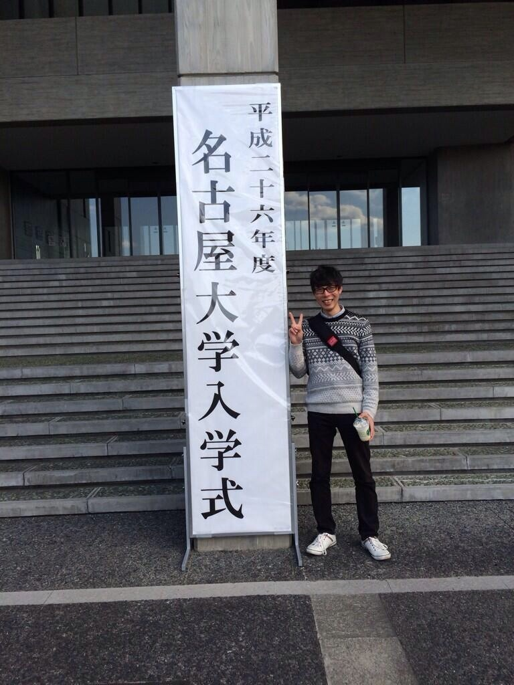
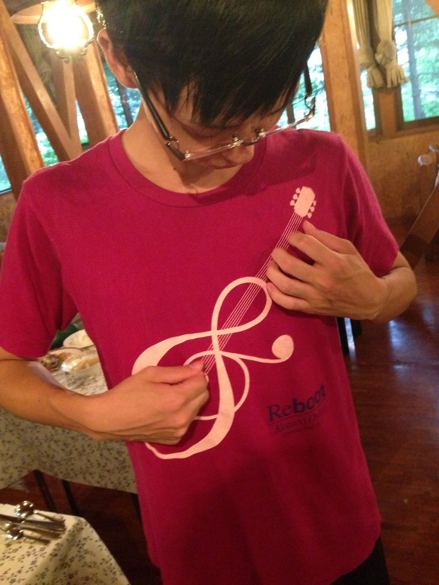

|
Back
【2013年度入部メンバー】
A. Sax
| No Image |
樫福 悠 (カシフク ハルカ) |
- |
| - |
- |
| - |
- |
| - |
- |
|
原田 堅太 (ハラダ ケンタ) |
大同生です |
| はらけんです |
12月12日生まれです |
| ものまね好きです |
リクエストあれば可能な限りやります |
| 完成度は低くてもやります |
人見知りです |
|
堀川 智代 (ホリカワ トモヨ) |
よよよ、よよちゃん、よよちなど様々 |
| 4月8日生まれ |
神木隆之介に似ているらしい |
| 実際の身長より低く見られがちです |
引き笑いが止まらないです |
| なんだかんだ中学からジャズをやってるみたい |
これでもコンミスです |
T. Sax
|
石川 恭一朗 (イシカワ キョウイチロウ) |
年度内最年少(実年齢) |
| 年度内最高齢(外見) |
昔はぱぱ |
| 今はゴリラ |
ゴリラウホ |
| ウホウホ |
ウホホホウホウホ |
|
嶋岡 加菜 (シマオカ カナ) |
南山大学に通う女子大生♪ |
| 1994.05.17 |
Ｏ型 |
| K-pop大好き |
KARAのぎゅりに似ているらしいです。 |
| 重度の方向音痴です。 |
かにゃんって呼ばれています |
|
中山 紗織 (ナカヤマ サオリ) |
お墓の近くの学校に通ってます |
| 5月11日生まれです |
誕生日祝われると嬉しくて泣くかもしれません |
| SNSは言うほど使わないです |
関係ないですが、この前殺人鬼の顔真似しました |
| 顔がアウトって言われました |
ショックです |
B. Sax
|
近藤 香織 (コンドウ カオリ) |
かおりんとかネイビーとかそんなん |
| 名大教育学部 |
※先生にはなりません |
| 身長149.7cm |
※バリトンより小さくないです |
| ※バリトンケースより小さくもないです |
田沼意次と誕生日がいっしょ |
Trumpet
|
加藤 芹奈 (カトウ セリナ) |
おはようございます。 |
| せりーぬです。 |
ぬーでも良いです。 |
| 1月7日生まれです。 |
B型です。 |
| 猫派です。 |
そろそろ書くことないです。 |
|
中村 美涼 (ナカムラ ミスズ) |
南山大学 |
| 人文学部 |
日本文化学科 |
| 勢い余って |
大学でジャズ再開 |
| 好きなのは |
ドナルドのもふ尻 |
|
平岩 慶夫 (ヒライワ ヨシオ) |
よしおです。髪の色がおかしい人です。 |
| 市立工業高校からの大同大学 |
誕生日 1月29日 |
| きゃりーぱみゅぱみゅと誕生日同じらしいです。 |
溶接なら俺に任せてください。 |
| 一番欲しいものは単位、フル単！フル単！ |
無茶振りはダメです(°_°) |
|
福島 光希 (フクシマ ミキ) |
4月11日生まれ |
| AB型 |
名古屋大学農学部 |
| 菊里高校吹奏楽部出身 |
中学のときはオーボエを吹いてました。 |
| 高校からはトランペットを吹いてます。 |
運動音痴です。 |
|
町田 裕輔 (マチダ ユウスケ) |
5月12日うまれ |
| トランペット吹いてます |
まっちーて呼ばれてます |
| よく似た兄ちゃんいます |
名大じゃなく名学にいます |
| 最近太ってきつつあるのが悩みです |
みんなの笑顔大好きです |
Trombone
|
粟津 早紀子 (アワヅ サキコ) |
誕生日 10月11日 |
| 名古屋大学教育学部 |
ジャズもバストロも初挑戦です |
| えーでる大好きです |
ぼーん隊も大好きです |
| お散歩も好きです |
水族館に行きたいです |
|
澤田 季歩 (サワダ キホ) |
猫が好きです。 |
| 筋肉も好きです。 |
- |
| - |
- |
| - |
- |
| No Image |
山口 真穂 (ヤマグチ マホ) |
- |
| - |
- |
| - |
- |
| - |
- |
|
石田 向日葵 (イシダ ヒマワリ) |
名前は向日葵だけど11月生まれ！ |
| 岐阜大学に通ってます（＾Ｏ＾） |
一応工学部です、笑 |
| 今年もうるさいです（＾Ｏ＾） |
ほんとにそんなつもりはないです！ |
| 今年の4月から岐阜にいます |
みんな遊びに来てね！ |
Piano
|
竹内 瑞恵 (タケウチ ミズエ) |
なるべくみーずーって呼んでね！ |
| 名古屋大学 文学部 |
4月18日生まれ |
| O型 |
色のない服は着ません |
| ヨイショなんてしたことないです |
靴下大好き＼( 'ω')／＼( 'ω')／ |
Guitar
|
李 炅耆 (イ キョンキ) |
ギターパートのリーです。 |
| 血液型 |
B |
| 誕生日 |
93.8.3 |
| 韓国人 |
- |
|
堀 史門 (ホリ シモン) |
6/22だいたい夏至の日うまれ |
| 工学部生です |
部長です |
| わりといい人って言われます |
(扱いが適当で)いい人 |
| (わりとどうでも)いい人 |
- |
Bass
|  |
鬼頭 慧 (キトウ サトシ) |
5月28日生まれ |
| 猫が好き |
とりあえずベース |
| 愛知高校 |
まさきじゃない |
| さとしです |
さとしだよ？ |
|  |
関 公貴 (セキ マサキ) |
→ ウッドベースを弾く人 |
| ちっすおよびじじい |
→ ワケあり |
| えーでる愉しい |
→ 闇 |
| エレキベース |
→ これは弾かない |
| No Image |
三上 潤 (ミカミ ジュン) |
- |
| - |
- |
| - |
- |
| - |
- |
Drums
| No Image |
菊間 悠里 (キクマ ユリ) |
- |
| 誕生日 |
2/12 |
| 好きな食べ物 |
コロッケ、じゃがいも |
| 好きなタイプ |
ハグの強さで感情がわかる人 |
|
藤野 紬 (フジノ ツムギ) |
つつつです。 |
| 声が低いと言われがちです。 |
年末に生まれて誕生日忘れられがちです。 |
| 納豆が異常に好きです。 |
最寄が名大駅の大学です。 |
| 中学からジャズやってたのかな。 |
年中花粉症。 |
Back
|